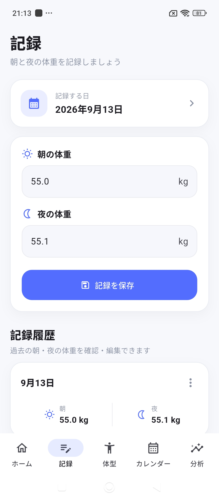
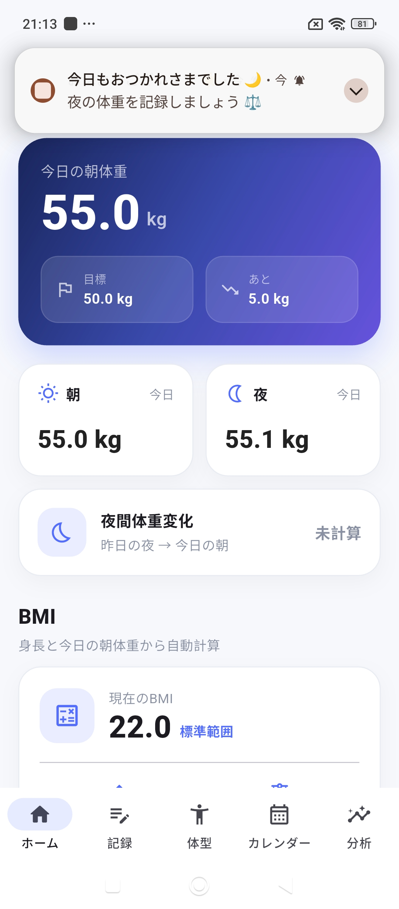
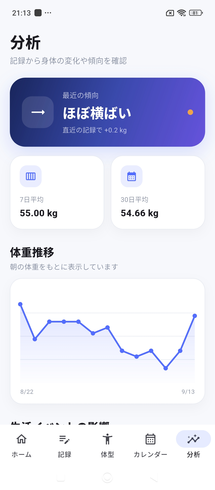

01
朝・夜の体重記録
1日の中で変化する体重を、 朝と夜に分けて記録できます。
MOBILE APP / PERSONAL DEVELOPMENT
体重だけじゃない、
「体型の変化」を記録する。
毎日の体重に加えて身体各部のサイズを記録し、 数値の変化を比較できる体型管理アプリです。 自分自身が日常的に使いたいと思えるものを目指して開発しています。



OVERVIEW
体重だけでは見えにくい身体の変化を、 数値として残して比較するためのアプリです。
朝・夜の体重だけでなく、ウエストや太ももなどの 身体各部のサイズも記録できます。
毎日の記録をできるだけ負担にせず、 自分の変化を後から確認しやすいことを重視しています。
WHY
「体重だけ記録しても、本当に体型が変わったのか分かりにくい」 というところから始まりました。
体重が同じでも、ウエストや脚などのサイズは 変わっていることがあります。
そこで、体重と身体各部のサイズをまとめて記録し、 過去との差を分かりやすく確認できるものを 自分で作ることにしました。
FEATURES
01
1日の中で変化する体重を、 朝と夜に分けて記録できます。
02
バスト・ウエスト・ヒップ・腕・太ももなど、 身体各部のサイズを記録できます。
03
過去の記録との差分を表示し、 どこがどれだけ変化したのか確認できます。
04
正面・側面のモデルを使って、 身体の記録を視覚的にも確認できるよう設計しています。
05
曜日ごとの予定や例外日を設定し、 ダイエットを行う日・行わない日を管理できます。
06
記録を忘れないよう、 決めた時間に通知できるようにしています。
DESIGN & THINKING
EASY TO USE
記録する項目が多くても負担になりすぎないよう、 日常的に入力することを前提に画面や操作を考えています。
COMPARISON
単に記録を保存するだけではなく、 過去との差分を数値で確認できることを重視しました。
FLEXIBILITY
曜日だけで固定せず例外日も設定できるようにするなど、 実際の生活に合わせて使える設計にしています。
TECHNOLOGY
SOURCE CODE
BodyLogのソースコードはこちらから確認できます。